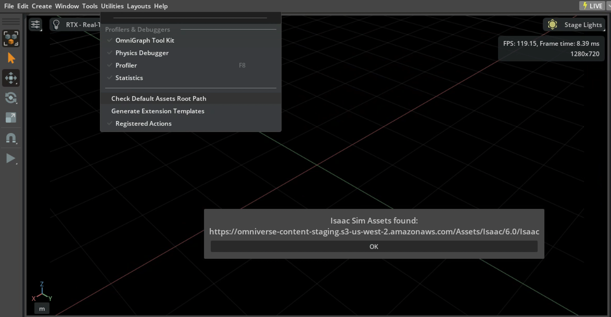
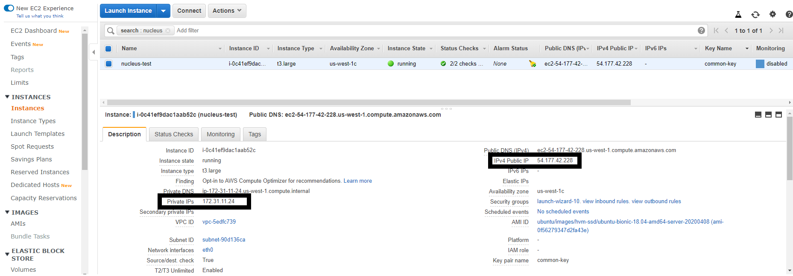

Setup Tips#
Isaac Sim Modes
Isaac Sim 전체 앱
이것은 메인 창 모드의 Isaac Sim 애플리케이션입니다.
이 모드에는 모든 Isaac Sim 확장이 포함되며 대부분은 기본적으로 활성화됩니다.
Isaac Sim 전체 스트리밍 앱(Isaac Sim WebRTC Streaming Client 사용)
이것은 Isaac Sim의 헤드리스 버전입니다. RTX GPU가 있는 워크스테이션에서 원격으로 실행하고 Linux, Windows, macOS에서 사용 가능한 Isaac Sim WebRTC Streaming Client 앱이나 Docker Compose를 통해 배포된 웹 기반 뷰어에서 액세스할 수 있습니다.
이 모드에는 모든 Isaac Sim 확장이 포함되며 대부분은 기본적으로 활성화됩니다.
Isaac Sim Python
이것은 Python 샘플을 실행하기 위한 미니 앱입니다.
Python 환경을 참조하세요.
Isaac Sim 실행 스크립트
스크립트 |
설명 |
|---|---|
|
Isaac Sim 전체 앱 |
|
Isaac Sim WebRTC Streaming Client 서비스가 있는 Isaac Sim 헤드리스 전체 앱 |
|
Fabric이 활성화된 Isaac Sim 전체 앱 |
|
XR 및 VR이 활성화된 Isaac Sim 기본 앱 |
|
Isaac Sim Jupyter Notebook 실행 파일 |
|
Isaac Sim Python 실행 파일 |
|
Isaac Sim Python 환경 설정 |
|
로컬 캐시 정리 스크립트 |
|
설치 후 한 번 실행할 스크립트 |
|
셰이더 캐시 워밍업 스크립트 |
스크립트 |
설명 |
|---|---|
|
Isaac Sim 전체 앱 |
|
Isaac Sim WebRTC Streaming Client 서비스가 있는 Isaac Sim 헤드리스 전체 앱 |
|
Fabric이 활성화된 Isaac Sim 전체 앱 |
|
XR 및 VR이 활성화된 Isaac Sim 기본 앱 |
|
Isaac Sim Python 실행 파일 |
|
Isaac Sim Python 환경 설정 |
|
로컬 캐시 정리 스크립트 |
|
설치 후 한 번 실행할 스크립트 |
|
셰이더 캐시 워밍업 스크립트 |
스크립트 |
설명 |
|---|---|
|
Isaac Sim을 창 모드 앱으로 실행하는 스크립트 |
|
Isaac Sim WebRTC Streaming Client 서비스가 있는 Isaac Sim 헤드리스 실행 스크립트 |
|
Isaac Sim Jupyter Notebook 실행 파일 |
|
Isaac Sim Python 실행 파일 |
|
Isaac Sim Python 환경 설정 |
|
로컬 캐시 정리 스크립트 |
|
셰이더 캐시 워밍업 스크립트 |
스크립트 |
설명 |
|---|---|
|
Isaac Sim을 창 모드 앱으로 실행하는 스크립트 |
|
Isaac Sim Python 실행 파일 |
|
Isaac Sim Python 환경 설정 |
|
로컬 캐시 정리 스크립트 |
|
셰이더 캐시 워밍업 스크립트 |
Isaac Sim CLI Launch flags
플래그 |
설명 |
|---|---|
|
지정된 값으로 구성 키를 재정의하도록 지시합니다. |
|
시작하기 전에 $cache 폴더를 정리합니다. |
|
시작하기 전에 $data 폴더를 정리합니다. |
|
확장을 시작하지 않고 로드만 합니다. |
|
확장을 활성화합니다(활성화된 목록에 확장을 추가하는 약식 방법). |
|
시작 시 콘솔 명령을 실행합니다. |
|
확장을 찾을 확장 폴더를 추가합니다. |
|
직접 확장 경로를 추가합니다(단일 확장 추가 허용). |
|
모든 확장을 해결하고 다운로드한 다음 바로 종료합니다. |
|
도움말 메시지 |
|
콘솔에서 정보 로그 출력을 표시합니다. |
|
모든 로컬 확장을 나열하고 종료합니다. |
|
모든 레지스트리 확장을 나열하고 종료합니다. |
|
구성 파일을 병합합니다. |
|
포터블 모드를 활성화합니다. 포터블 루트는 기본적으로 ${kit} 경로입니다. |
|
포터블 모드를 활성화하고 data/cache/logs 폴더를 거기에 배치합니다. |
|
레지스트리에 확장을 게시하고 종료합니다. |
|
게시 시 레지스트리의 확장 덮어쓰기를 허용합니다. |
|
user.config 파일에서 영구 설정을 로드하지 않습니다. |
|
레지스트리에서 확장을 게시 취소하고 종료합니다. |
|
확장 레지스트리에서 최신 버전을 찾아 활성화된 모든 확장에 대해 업데이트합니다. |
|
콘솔에서 자세한 로그 출력을 표시합니다. |
|
실행을 일시 중단하고 디버거 연결을 기다립니다. |
Kit Extension Registry
Kit 확장 레지스트리
Note
Isaac Sim 6.0부터 Kit 확장 레지스트리는 이제 Kit SDK에 의해 자동으로 관리됩니다. Kit 레지스트리 설정을 지정하는 사용자 정의 .kit 파일이나 구성 재정의가 있는 경우 제거해야 합니다.
Isaac Sim 6.0 이후 버전으로의 마이그레이션: [settings.exts."omni.kit.registry.nucleus"] 아래에 Kit 레지스트리 설정을 포함하는 사용자 정의 .kit 구성 파일이나 사용자 구성 재정의가 있는 경우 호환성을 위해 제거하는 것이 권장됩니다.
Kit SDK는 이제 레지스트리 구성을 자동으로 처리하며, 사용자 정의 레지스트리 재정의는 더 이상 필요하지 않습니다. 이 설정을 제거하면 Isaac Sim 6.0 이후 버전과의 호환성이 보장됩니다.
사용자 정의 레지스트리를 추가하려면 Window > Extensions로 이동하여 Extension Registries 섹션에서 새 사용자 정의 레지스트리를 추가합니다.
Differences Between Workstation And Docker
워크스테이션과 Docker 설치의 차이점
Isaac Sim 설치 방법은 두 가지입니다:
Workstation Installation은 워크스테이션 사용자에게 권장됩니다.
Container Installation은 Docker 컨테이너를 사용하는 원격 헤드리스 서버나 클라우드에 권장됩니다.
Note
워크스테이션과 Docker 설치의 주요 차이점은 다음과 같습니다:
Isaac Sim Docker 컨테이너에는 Nucleus가 포함되어 있지 않으며 기본적으로 클라우드에서 에셋에 직접 접근합니다.
워크스테이션 패키지의 권장 루트 폴더는 ~/isaacsim 또는 C:\isaacsim이며, Docker 컨테이너의 루트 폴더는 /isaac-sim입니다.
일반적인 경로의 차이점은 Isaac Sim 앱 위치를 참조하세요.
Common Path Locations
Isaac Sim 앱 위치
~/isaacsim
C:\isaacsim
/isaac-sim
Isaac Sim 로그 위치
~/.nvidia-omniverse/logs/Kit/Isaac-Sim
%userprofile%\.nvidia-omniverse\logs\Kit\Isaac-Sim
/root/.nvidia-omniverse/logs/Kit/Isaac-Sim
Isaac Sim 셰이더 캐시 위치
~/.cache/ov/Kit
%userprofile%\AppData\Local\ov\cache\Kit
/root/.cache/ov/Kit
Isaac Sim 구성 위치
~/.local/share/ov/data/Kit/Isaac-Sim
%userprofile%\AppData\Local\ov\data\Kit\Isaac-Sim
/root/.local/share/ov/data/Kit/Isaac-Sim
Multi-GPU
멀티 GPU
멀티 GPU 지원 및 특정 GPU 설정은 명령줄을 통해 일반적인 구성 방법으로 활성화할 수 있습니다…
./isaac-sim.sh --/renderer/multiGpu/enabled=true
…또는 Python의 kit 구성으로…
import carb.settings
settings = carb.settings.get_settings()
# set different types into different keys
# guideline: each extension puts settings in /ext/[ext name]/ and lists them extension.toml for discoverability
settings.set("/renderer/multiGPU/enabled", True)
유용한 설정에는 다음이 포함되지만 이에 한정되지 않습니다….
/renderer/multiGpu/Enabled=true는 렌더링에 여러 GPU를 활성화합니다./renderer/multiGpu/autoEnable=true는 사용 가능한 경우 멀티 GPU 렌더링을 활성화합니다./renderer/multiGpu/maxGpuCount=2는 렌더링에 할당할 최대 GPU 수를 설정합니다./renderer/activeGpu=0은 nvidia-smi에 따라 활성 GPU를 설정합니다.
Assets
로컬 에셋 팩
Isaac Sim 로컬 에셋 팩은 로컬에서 및 에어갭 환경에서 사용할 수 있습니다.
최신 릴리스 섹션에서 Isaac Sim Assets Complete Pack을 다운로드합니다. 아래 예제는 Aria2를 사용하여 중단된 다운로드를 재개하고 각 파일을 MD5 체크섬으로 검증하는 방법을 보여줍니다.
sudo apt install aria2
cd ~/Downloads
aria2c -c --checksum=md5=401e58c4e08c906fab5fc6fa6825c1cb "https://downloads.isaacsim.nvidia.com/isaac-sim-assets-complete-6.0.0.001.zip"
aria2c -c --checksum=md5=201941c1f0cdc91346cc40a941d8afaf "https://downloads.isaacsim.nvidia.com/isaac-sim-assets-complete-6.0.0.002.zip"
aria2c -c --checksum=md5=8cf4da965aed1a1eca5a9362f689bda8 "https://downloads.isaacsim.nvidia.com/isaac-sim-assets-complete-6.0.0.003.zip"
aria2c -c --checksum=md5=14c023814d805c927e9c8cf766213ee1 "https://downloads.isaacsim.nvidia.com/isaac-sim-assets-complete-6.0.0.004.zip"
aria2c -c --checksum=md5=ab770e11d0365c6b4a3591caf5daf5bb "https://downloads.isaacsim.nvidia.com/isaac-sim-assets-complete-6.0.0.005.zip"
winget install --id=aria2.aria2 -e
cd %USERPROFILE%/Downloads
aria2c -c --checksum=md5=401e58c4e08c906fab5fc6fa6825c1cb "https://downloads.isaacsim.nvidia.com/isaac-sim-assets-complete-6.0.0.001.zip"
aria2c -c --checksum=md5=201941c1f0cdc91346cc40a941d8afaf "https://downloads.isaacsim.nvidia.com/isaac-sim-assets-complete-6.0.0.002.zip"
aria2c -c --checksum=md5=8cf4da965aed1a1eca5a9362f689bda8 "https://downloads.isaacsim.nvidia.com/isaac-sim-assets-complete-6.0.0.003.zip"
aria2c -c --checksum=md5=14c023814d805c927e9c8cf766213ee1 "https://downloads.isaacsim.nvidia.com/isaac-sim-assets-complete-6.0.0.004.zip"
aria2c -c --checksum=md5=ab770e11d0365c6b4a3591caf5daf5bb "https://downloads.isaacsim.nvidia.com/isaac-sim-assets-complete-6.0.0.005.zip"
Aria2가 체크섬 오류를 보고하면 실패한 파트를 제거하고 해당 파일에 대해 명령을 다시 실행한 다음 파트를 결합합니다.
패키지를 폴더에 압축 해제합니다.
mkdir ~/isaacsim_assets
cd ~/Downloads
cat isaac-sim-assets-complete-6.0.0.001.zip isaac-sim-assets-complete-6.0.0.002.zip isaac-sim-assets-complete-6.0.0.003.zip isaac-sim-assets-complete-6.0.0.004.zip isaac-sim-assets-complete-6.0.0.005.zip > isaac-sim-assets-complete-6.0.0.zip
unzip "isaac-sim-assets-complete-6.0.0.zip" -d ~/isaacsim_assets
mkdir C:\isaacsim_assets
cd %USERPROFILE%/Downloads
copy /b isaac-sim-assets-complete-6.0.0.001.zip + isaac-sim-assets-complete-6.0.0.002.zip + isaac-sim-assets-complete-6.0.0.003.zip + isaac-sim-assets-complete-6.0.0.004.zip + isaac-sim-assets-complete-6.0.0.005.zip isaac-sim-assets-complete-6.0.0.zip
tar -xvzf "isaac-sim-assets-complete-6.0.0.zip" -C C:\isaacsim_assets
Note
5개의 에셋 팩이 모두 필요하며 단일 루트 폴더(예: ~/isaacsim_assets/Assets/Isaac/6.0)에 합쳐야 합니다.
이 루트 폴더(~/isaacsim_assets/Assets/Isaac/6.0)에는 NVIDIA 및 Isaac 폴더가 모두 포함되어야 합니다.
Isaac Sim 설정 지침을 따른 다음 isaacsim.exp.base.kit 파일을 편집합니다.
/home/<username>/isaacsim/apps/isaacsim.exp.base.kit 파일을 편집하고 아래 설정을 추가합니다:
[settings]
persistent.isaac.asset_root.default = "/home/<username>/isaacsim_assets/Assets/Isaac/6.0"
exts."isaacsim.gui.content_browser".folders = [
"/home/<username>/isaacsim_assets/Assets/Isaac/6.0/Isaac/Robots",
"/home/<username>/isaacsim_assets/Assets/Isaac/6.0/Isaac/Robots_Multiphysics",
"/home/<username>/isaacsim_assets/Assets/Isaac/6.0/Isaac/People",
"/home/<username>/isaacsim_assets/Assets/Isaac/6.0/Isaac/IsaacLab",
"/home/<username>/isaacsim_assets/Assets/Isaac/6.0/Isaac/Props",
"/home/<username>/isaacsim_assets/Assets/Isaac/6.0/Isaac/Environments",
"/home/<username>/isaacsim_assets/Assets/Isaac/6.0/Isaac/Materials",
"/home/<username>/isaacsim_assets/Assets/Isaac/6.0/Isaac/Samples",
"/home/<username>/isaacsim_assets/Assets/Isaac/6.0/Isaac/Sensors",
]
C:/isaacsim/apps/isaacsim.exp.base.kit 파일을 편집하고 아래 설정을 추가합니다:
[settings]
persistent.isaac.asset_root.default = "C:/isaacsim_assets/Assets/Isaac/6.0"
exts."isaacsim.gui.content_browser".folders = [
"C:/isaacsim_assets/Assets/Isaac/6.0/Isaac/Robots",
"C:/isaacsim_assets/Assets/Isaac/6.0/Isaac/Robots_Multiphysics",
"C:/isaacsim_assets/Assets/Isaac/6.0/Isaac/People",
"C:/isaacsim_assets/Assets/Isaac/6.0/Isaac/IsaacLab",
"C:/isaacsim_assets/Assets/Isaac/6.0/Isaac/Props",
"C:/isaacsim_assets/Assets/Isaac/6.0/Isaac/Environments",
"C:/isaacsim_assets/Assets/Isaac/6.0/Isaac/Materials",
"C:/isaacsim_assets/Assets/Isaac/6.0/Isaac/Samples",
"C:/isaacsim_assets/Assets/Isaac/6.0/Isaac/Sensors",
]
로컬 에셋을 사용하려면 아래 플래그와 함께 Isaac Sim을 실행합니다.
./isaac-sim.sh --/persistent/isaac/asset_root/default="/home/<username>/isaacsim_assets/Assets/Isaac/6.0"
.\isaac-sim.bat --/persistent/isaac/asset_root/default="C:/isaacsim_assets/Assets/Isaac/6.0"
Note
persistent.isaac.asset_root.default 설정은 .kit 설정 파일(3단계) 또는 명령줄(4단계)을 통해 설정할 수 있습니다. 기본값은 https://omniverse-content-production.s3-us-west-2.amazonaws.com/Assets/Isaac/6.0으로 설정됩니다.
persistent.isaac.asset_root.default 설정은 get_assets_root_path_async` 또는 get_assets_root_path` 함수를 호출하는 Python 코드에서 사용됩니다.
exts."isaacsim.gui.content_browser".folders 설정은 콘텐츠 브라우저에서 사용됩니다.
에셋 루트 해석 순서
persistent.isaac.asset_root.default 설정은 여러 소스에서 해석됩니다. 다음 표는 우선순위가 높은 것부터 낮은 순서로 나열합니다:
우선순위 |
소스 |
예시 |
|---|---|---|
1 |
|
|
2 |
명령줄 인수 |
|
3 |
Experience( |
|
4 |
확장 기본값( |
|
시작 시 isaacsim.storage.native 확장은 ISAACSIM_ASSET_ROOT 환경 변수를 읽고, 설정된 경우 .kit 파일이나 명령줄 인수에서 제공된 값에 관계없이 설정을 덮어씁니다. 변수가 설정되지 않은 경우 일반적인 Kit 설정 우선순위가 적용됩니다(CLI > .kit > extension.toml).
에셋 확인
Isaac Sim 앱에서 에셋 접근을 확인하려면 Utilities 메뉴로 이동한 다음 Check Default Assets Root Path를 클릭합니다.

이전 섹션에서 에셋 팩을 수동으로 다운로드한 경우 로그에 다음이 표시됩니다:
[139.213s] Checking for Isaac Sim Assets...
[139.218s] Isaac Sim assets found: /home/<username>/isaacsim_assets/Assets/Isaac/6.0
[139.213s] Checking for Isaac Sim Assets...
[139.218s] Isaac Sim assets found: C:\isaacsim_assets\Assets\Isaac\5.0
기본적으로 로그에 다음이 표시됩니다:
[139.213s] Checking for Isaac Sim Assets...
[139.218s] Isaac Sim assets found: https://omniverse-content-production.s3-us-west-2.amazonaws.com/Assets/Isaac/6.0
Docker
로컬 디스크에 Isaac Sim 구성 저장
컨테이너에서 실행할 때 Isaac Sim 구성 및 데이터를 영속화하려면 Docker 컨테이너를 실행할 때 아래 플래그를 사용합니다.
-v ~/docker/isaac-sim/cache/main:/isaac-sim/.cache:rw #For cache
-v ~/docker/isaac-sim/cache/computecache:/isaac-sim/.nv/ComputeCache:rw #For cache
-v ~/docker/isaac-sim/logs:/isaac-sim/.nvidia-omniverse/logs:rw #For log files
-v ~/docker/isaac-sim/config:/isaac-sim/.nvidia-omniverse/config:rw #For config files
-v ~/docker/isaac-sim/data:/isaac-sim/.local/share/ov/data:rw #For data
-v ~/docker/isaac-sim/pkg:/isaac-sim/.local/share/ov/pkg:rw #For apps
-u 1234:1234 #To set user permissions
$ sudo docker run --name isaac-sim --entrypoint bash -it --gpus all -e "ACCEPT_EULA=Y" --rm --network=host \
-v ~/docker/isaac-sim/cache/main:/isaac-sim/.cache:rw \
-v ~/docker/isaac-sim/cache/computecache:/isaac-sim/.nv/ComputeCache:rw \
-v ~/docker/isaac-sim/logs:/isaac-sim/.nvidia-omniverse/logs:rw \
-v ~/docker/isaac-sim/config:/isaac-sim/.nvidia-omniverse/config:rw \
-v ~/docker/isaac-sim/data:/isaac-sim/.local/share/ov/data:rw \
-v ~/docker/isaac-sim/pkg:/isaac-sim/.local/share/ov/pkg:rw \
-u 1234:1234 \
nvcr.io/nvidia/isaac-sim:6.0.0
Note
이 플래그는 Isaac Sim 캐시, 로그, 구성 및 데이터를 저장하기 위해 홈 폴더를 사용합니다.
Docker 컨테이너 연결 문제
Docker 컨테이너 연결 문제를 해결하려면 Docker 컨테이너를 실행할 때 –network=host 플래그를 사용해 보세요.
$ sudo docker run --gpus all -e "ACCEPT_EULA=Y" --rm --network=host nvcr.io/nvidia/isaac-sim:6.0.0
Note
이 플래그는 Nucleus 서버에 연결하는 데 필요합니다.
컨테이너의 로그 읽기
NVIDIA Isaac Sim이 컨테이너에서 실행 중인지 확인하려면 로그를 읽을 수 있습니다:
1. NVIDIA Isaac Sim 컨테이너가 원격 머신에 있는 경우 터미널을 사용하여 Docker 호스트에 SSH로 연결합니다.
pem 키 폴더에서 이 명령을 실행합니다. <public_ip_address>를 인스턴스 또는 원격 호스트 IP 주소로 교체합니다:
$ ssh -i "yourkey.pem" ubuntu@<public_ip_address>
다음과 같이 실행 중인 컨테이너에 접근합니다:
$ docker exec -it <container_id_or_name> bash
$ cd /root/.nvidia-omniverse/logs/Kit/Isaac-Sim/<version_number>
컨테이너 재시작
아래 단계는 헤드리스 컨테이너를 재시작하는 데 사용됩니다.
NVIDIA Isaac Sim Container를 실행하는 호스트 머신 또는 AWS 인스턴스에 SSH로 연결합니다.
$ ssh -i "<ssh_key_name>.pem" ubuntu@<public_ip_address>
실행 중인 모든 컨테이너를 나열하고 NVIDIA Isaac Sim을 실행 중인 컨테이너 ID를 찾습니다.
$ sudo docker ps
CONTAINER ID IMAGE
823686a7036d nvcr.io/nvidia/isaac-sim...2021.2.1
컨테이너를 재시작합니다.
$ sudo docker restart [CONTAINER ID]
Docker 로그를 봅니다.
$ sudo docker logs [CONTAINER ID]
Docker 내에서 NVIDIA Isaac Sim 재시작
Docker를 실행 상태로 유지하면서 NVIDIA Isaac Sim을 재시작하려면 Docker를 Bash를 엔트리포인트로 시작하여 수동으로 NVIDIA Isaac Sim을 시작하거나 중지할 수 있습니다.
Bash로 Docker를 시작하고 NVIDIA Isaac Sim을 수동으로 시작합니다.
$ sudo docker run -it --entrypoint bash --gpus all -e "ACCEPT_EULA=Y" --rm --network=host nvcr.io/nvidia/isaac-sim:6.0.0
$ ./runheadless.sh
네이티브 스트리밍 클라이언트를 연결하고 NVIDIA Isaac Sim을 원격으로 보려면 Isaac Sim WebRTC Streaming Client로 진행합니다. 모든 스트리밍 옵션은 Livestream Clients를 참조하세요.
3. 종료해야 할 때는 별도의 터미널에서 헤드리스 서버를 실행 중인 동일한 컨테이너 내에서 대화형 bash 세션을 시작하고 NVIDIA Isaac Sim 관련 프로세스를 종료합니다.
$ docker exec -it <container_id> bash
$ pkill omniverse-kit
NVIDIA Isaac Sim을 재시작합니다.
$ ./runheadless.sh
Docker 이미지 저장
Docker 내에서 ROS나 기타 라이브러리를 설치하는 등 중요한 변경을 했다면 모든 것을 다시 설치하지 않고 Docker를 재시작할 수 있도록 Docker 이미지를 저장할 수 있습니다.
컨테이너 ID를 찾아 커밋합니다.
$ docker ps
$ docker commit <CONTAINER ID> <new docker name>
특정 Docker를 다시 로드하려면:
$ docker run -it --entrypoint bash --gpus all -e "ACCEPT_EULA=Y" --rm --network=host -d <new Docker name>
캐시된 Docker 이미지 만들기
Isaac Sim의 로컬 캐시 이미지를 만들면 컨테이너에서 Isaac Sim을 실행할 때 로드 시간을 개선하고 사전 설치된 사용자 정의 의존성을 포함할 수 있습니다.
이 캐시 이미지를 만들려면 먼저 NGC에서 최신 Isaac Sim 컨테이너를 가져와 실행합니다.
$ docker pull nvcr.io/nvidia/isaac-sim:6.0.0
$ docker run --name isaac-sim --entrypoint bash -it --rm --gpus all --network=host \
-e "ACCEPT_EULA=Y" -e "PRIVACY_CONSENT=Y" \
nvcr.io/nvidia/isaac-sim:6.0.0
의존성(예: ROS 또는 기타 라이브러리)을 설치하고 셰이더 캐시를 워밍업합니다.
$ ./python.sh -m pip install stable-baselines3 tensorboard
$ ./python.sh standalone_examples/api/isaacsim.simulation_app/hello_world.py -v
$ ./runheadless.sh -v --/app/quitAfter=1000
캐시된 Docker 이미지를 만듭니다.
$ docker commit isaac-sim isaac-sim-cached
필요한 경우 다른 머신으로 전송하기 위해 Docker 이미지를 압축 아카이브로 저장합니다.
$ docker save isaac-sim-cached | gzip > isaac-sim-cached.tar.gz
압축 아카이브를 Docker 이미지로 로드합니다.
$ docker load -i isaac-sim-cached.tar.gz isaac-sim-cached
이 캐시 이미지를 실행합니다.
$ docker run --name isaac-sim-cached --entrypoint bash -it --gpus all --rm --network=host \
-e "ACCEPT_EULA=Y" -e "PRIVACY_CONSENT=Y" \
isaac-sim-cached
Docker 설정
Linux에 Docker를 설치한 후 Linux 설치 후 단계의 지침에 따라 Docker 컨테이너를 실행하는 데 sudo를 사용할 필요가 없도록 설정합니다.
컨테이너에 폴더 마운트
호스트 머신의 데이터를 컨테이너에 추가하려면 폴더를 마운트해야 합니다.
$ sudo docker run --gpus all --rm -e "ACCEPT_EULA=Y" -v ~/docker/isaac-sim/documents:/root/Documents:rw nvcr.io/nvidia/isaac-sim:6.0.0
Note
이제 홈 폴더의 docker/isaac-sim/documents에 파일을 복사하면 Isaac Sim 컨테이너의 /root/Documents에 표시됩니다.
Cloud
AWS EC2 인스턴스의 IP 주소 가져오기
AWS EC2 인스턴스의 공용 및 사설 IP 주소를 확인하려면 EC2 대시보드의 인스턴스 섹션으로 이동하여 인스턴스를 선택합니다. 아래 이미지에서 사설 및 공용 IP의 예를 참조하세요:

AWS EC2 인스턴스에 SSH 접속
위의 배포에서 만든 AWS EC2 인스턴스에 직접 액세스해야 하는 경우 다음 단계를 실행하여 인스턴스에 SSH로 연결합니다:
$ ssh -i "<ssh_key_name>.pem" ubuntu@<public_ip_address>
AWS 액세스 키 만들기
다음 지침에 따라 AWS 액세스 키를 만듭니다:
SSH 키 만들기
Linux에서
실행:
$ mkdir ~/.ssh
$ chmod 700 ~/.ssh
$ ssh-keygen -t rsa
패스프레이즈를 두 번 입력합니다.
공개 키는 홈 폴더의 .ssh/id_rsa.pub에 있고 개인 키는 .ssh/id_rsa에 있습니다.
Windows에서
PuTTYgen을 다운로드합니다.
PuTTYgen을 실행하고 "공개/개인 키 쌍 생성"을 클릭합니다.
공개 키 저장을 클릭하고 파일 이름을 "${ssh_key_name}.pub"로 지정합니다. 이것이 공개 키 파일입니다.
변환 메뉴에서 OpenSSH 키 내보내기를 선택하고 파일 이름을 "${ssh_key_name}.pem"으로 지정합니다. 이것이 개인 키 파일입니다.
"${ssh_key_name}.pem" 파일의 속성을 편집합니다.
보안 설정으로 이동하여 고급을 클릭합니다.
상속 제거
현재 사용자를 파일 소유자로 설정하고 해당 사용자에게만 전체 권한 부여
이것은 인스턴스에 SSH로 연결하려고 할 때 권한 오류를 방지하기 위한 것입니다.
Nucleus
Nucleus의 에셋
Isaac Sim 에셋에 액세스하려면 인터넷 연결이 필요합니다.
Note
Isaac Sim 에셋은 모든 Nucleus 서버의 기본 /NVIDIA/Assets/Isaac 폴더에서도 사용할 수 있습니다.
기본 Nucleus 서버 설정
네이티브로 실행할 때 기본 Nucleus 서버를 설정하려면
user.config.json파일을 편집하여 다음 줄을 찾습니다:
"persistent": {
"isaac": {
"asset_root": {
"default": "omniverse://localhost/NVIDIA/Assets/Isaac/6.0",
}
},
},
localhost를 Nucleus 서버의 IP 주소로 변경합니다.
Note
user.config.json파일 위치:Linux:
~/.local/share/ov/data/Kit/Isaac-Sim/5.0/user.config.jsonWindows:
C:\Users\{username}\AppData\Local\ov\data\Kit\Isaac-Sim\5.0\user.config.json
persistent/isaac/asset_root/default 설정의 폴더에는 Isaac 및 NVIDIA 폴더가 모두 포함되어야 합니다.
다음 플래그로 Isaac Sim을 실행할 수도 있습니다:
--/persistent/isaac/asset_root/default="omniverse://<ip_address>/NVIDIA/Assets/Isaac/6.0"
Docker에서 실행할 때 기본 Nucleus 서버를 설정하려면
-e "OMNI_SERVER=omniverse://<ip_address>/NVIDIA/Assets/Isaac/6.0"플래그를 사용합니다. 여기서<ip_address>는 Nucleus 서버의 IP 주소입니다.
$ sudo docker run --gpus all -e "ACCEPT_EULA=Y" -e "OMNI_SERVER=omniverse://<ip_address>/NVIDIA/Assets/Isaac/6.0" --rm --network=host nvcr.io/nvidia/isaac-sim:6.0.0
Nucleus 서버 연결을 위한 기본 사용자 이름 및 비밀번호 설정
네이티브로 실행할 때 기본 자격 증명을 설정하려면 다음 명령을 사용합니다:
$ export OMNI_USER=<username>
$ export OMNI_PASS=<password>
Docker에서 실행할 때 기본 자격 증명을 설정하려면
-e "OMNI_USER=<username>" -e "OMNI_PASS=<password>"플래그를 사용합니다(기본값은 각각 "admin").
$ sudo docker run --gpus all -e "ACCEPT_EULA=Y" -e "OMNI_USER=<username>" -e "OMNI_PASS=<password>" --rm --network=host nvcr.io/nvidia/isaac-sim:6.0.0